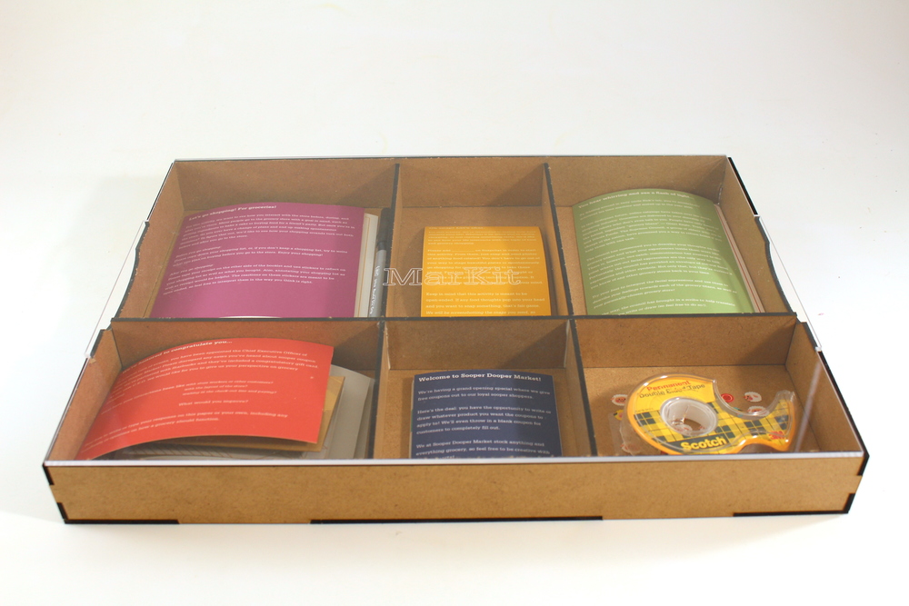
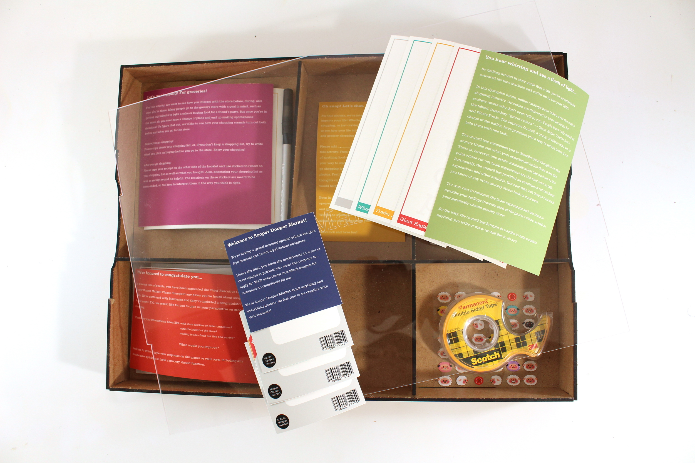
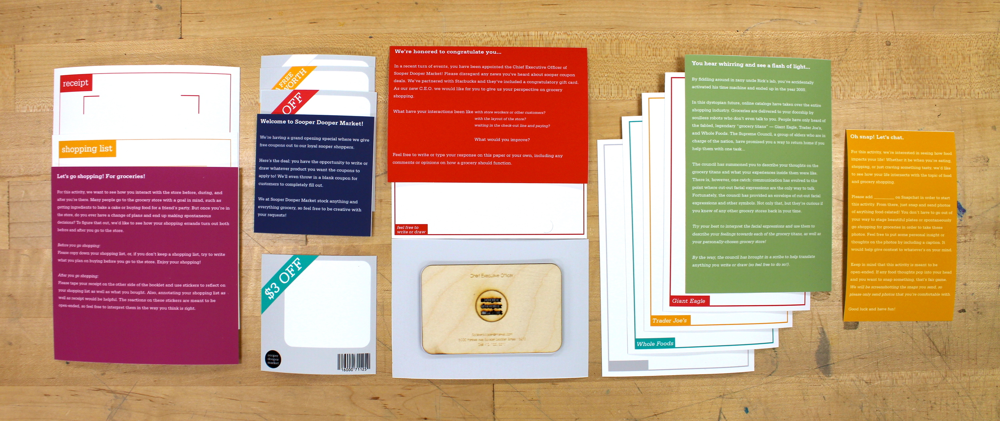
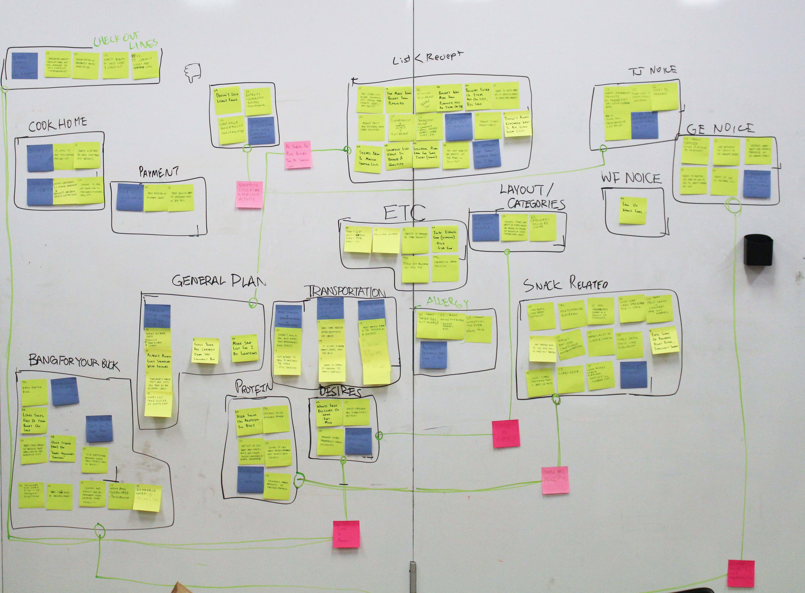
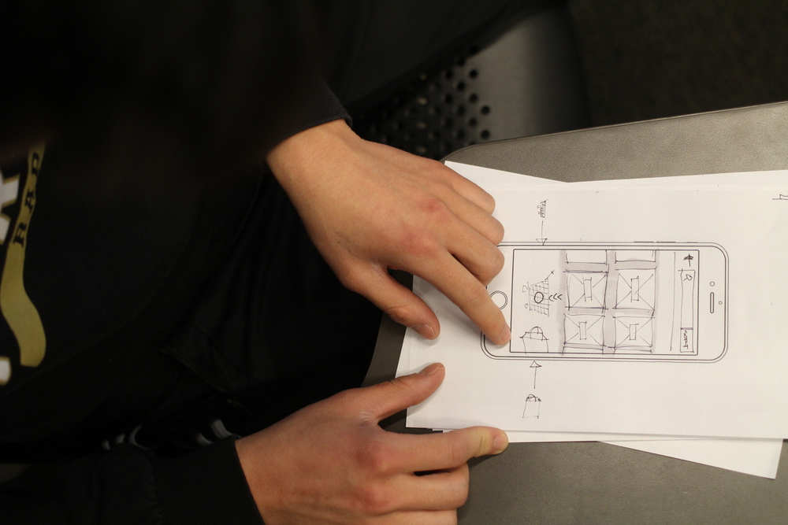
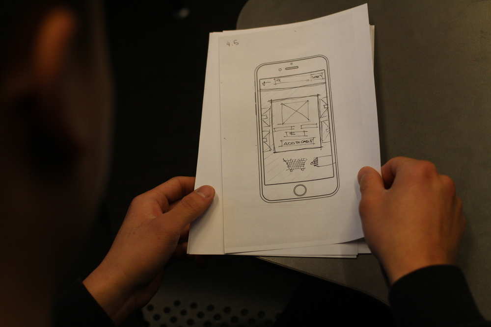
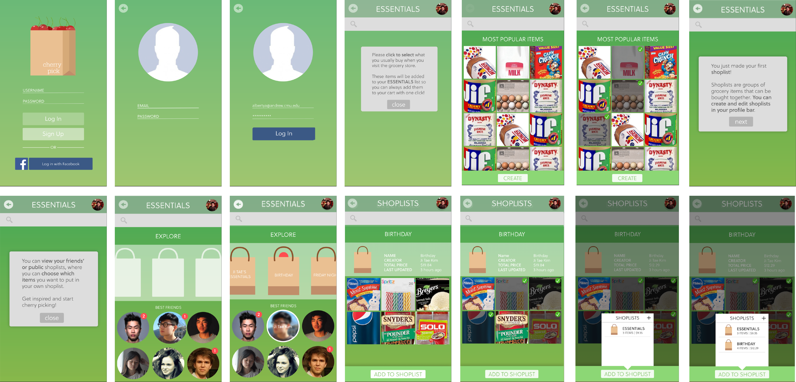

Overview
By conducting several weeks of research on people's grocery shopping habits using a variety of methods, Ji Tae Kim, Jasper Tom, and I applied what we had learned and created Cherry Pick - an app that connects people through their shopping lists.
Deep Hanging Out
The first method of research we employed was taking notes (PDF) while immersing ourselves, or "deep hanging out," at a local grocery store. Our goals from this were to notice and understand the space as well as people's interactions with their surrounding environment.
By deep hanging out, we noticed that people almost never interact with those they didn't know, even if other people were in their way of an item or just clogging up the aisle. The place with most social interaction was the butcher section, where the clerks were very playful with their customers. The experience there seemed much more personal and friendly in comparison to the isolated vibe in the rest of the store.
Cultural Probe (MarKit) — pictured below
Additionally, we sent out cultural probes (titled "MarKit") to five university students — some undergraduate, some graduate. Each probe consisted of five activities ranging from sending food-related Snapchats to us to writing down their shopping lists and comparing them to their final receipts. These activities were designed specifically for us gain insight on people's thoughts on their shopping experiences, as well as to look closer into their (un)intentional shopping habits. A week after sending them out, we got the probes back and began to analyze the results.



Generative Workshop — pictured below
Following the cultural probe activities, we held a generative workshop with three other students to gauge a sense of what they prioritize while shopping. Our activities included having them choose from a list of grocery items given a limited budget, and writing down their "routine" before, during, and after the act of grocery shopping.
Affinity Clustering — pictured below
Based on the results from the cultural probes, we wrote down quick notes of each completed activity and then grouped them together in clusters to take note of any patterns we noticed. From our affinity clustering, we noticed that the stores people had more favorable experiences in had much more natural and personal environments (i.e. Trader Joe's, Whole Foods). From there, we decided to explore the idea of creating a personal experience for shoppers more through the creation of our app.

Rapid Prototyping — pictured below
We created some lo-fi mockups of app screens and tested them with different users. Our initial ideas involved having people interact with an animated shopping cart to simulate the act of physically shopping in a store, but eventually felt that this was not personal enough to the users. From there, we took a step back and decided to explore how to create a more social experience for shoppers.


Cherry Pick App Development
We agreed to focus on creating a personalized experience for the user to make them feel more comfortable with the idea of grocery shopping. Part of our mission was also to introduce the idea of having grocery shopping be a social activity rather than an individual one.
Cherry Pick allows people to create shopping lists for each and every occasion, such as fancy Friday nights or extravagant birthday parties. Shopping lists are viewable by one's friends, who can then choose to create their own lists by "cherry picking" items that they notice. This creates a more organized experience for one's own grocery shopping, while also allowing for shopping and event inspiration from one's social circles.
